פשוט להצליח במתמטיקה › כל הנושאים › כיתה ח׳
מתמטיקה לכיתה ח׳ – סרטוני הסבר לפי נושא
כל סרטוני ההסבר במתמטיקה לכיתה ח׳ – 119 סרטונים לפי הנושאים בתוכנית הלימודים: אלגברה ופירוק לגורמים, משוואות, בעיות מילוליות ותנועה, מערכות משוואות, אי-שוויונות, קו ישר ושיפוע, יחס ופרופורציה, אחוזים ועוד. מתאים לתרגול לקראת מבחנים ולחזרה על החומר.
- אלגברה ופירוק לגורמים
- משוואות
- בעיות מילוליות ותנועה
- מערכות משוואות
- אי-שוויונות
- קו ישר ושיפוע
- יחס ופרופורציה
- אחוזים
- זוויות
- חפיפת משולשים
- משולש ישר-זווית ופיתגורס
- תרגול ושאלות בגרות מעורבות
אלגברה ופירוק לגורמים (1) לכל הסרטונים בנושא ←
משוואות (6) לכל הסרטונים בנושא ←
 משוואות עם מכנים – כפל בהצלבה
משוואות עם מכנים – כפל בהצלבה משוואה עם נעלם אחד ושבר כיתה ח
משוואה עם נעלם אחד ושבר כיתה ח משוואה עם נעלם אחד ושבר נדיר ביופיו כיתה חמשוואות עם נעלם אחד
משוואה עם נעלם אחד ושבר נדיר ביופיו כיתה חמשוואות עם נעלם אחד תרגיל לשחק עם משוואה – חוקי חשבון: אותה פעולה לכל האיברים
תרגיל לשחק עם משוואה – חוקי חשבון: אותה פעולה לכל האיברים פתרון משוואות עם נעלם אחד · סרטון קצר
פתרון משוואות עם נעלם אחד · סרטון קצרבעיות מילוליות ותנועה (11) לכל הסרטונים בנושא ←
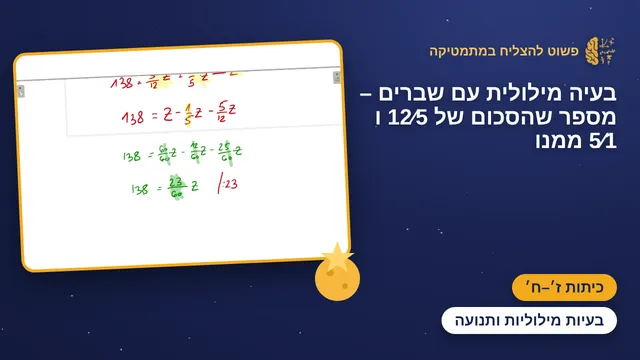
בעיה מילולית עם שברים – מספר שהסכום של 5∕12 ו 1∕5 ממנו בעיה מילולית – מחירי משולשי פיצה בניית משוואה
בעיה מילולית – מחירי משולשי פיצה בניית משוואה בעיות מילוליות כיתה ז וח עם נעלם אחד 1
בעיות מילוליות כיתה ז וח עם נעלם אחד 1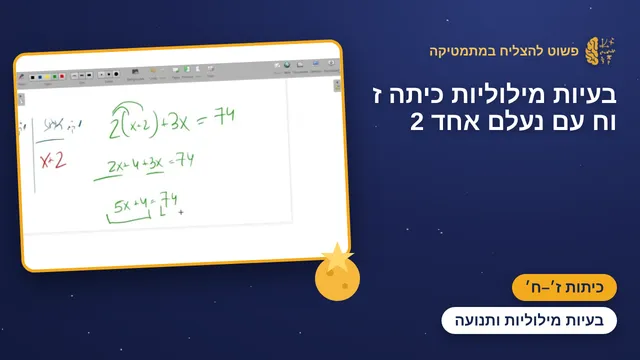
בעיות מילוליות כיתה ז וח עם נעלם אחד 2 בעיה מילולית עם נעלם אחד כיתה ח
בעיה מילולית עם נעלם אחד כיתה ח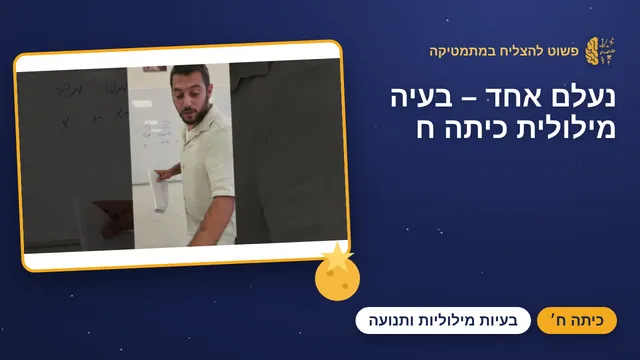
נעלם אחד – בעיה מילולית כיתה ח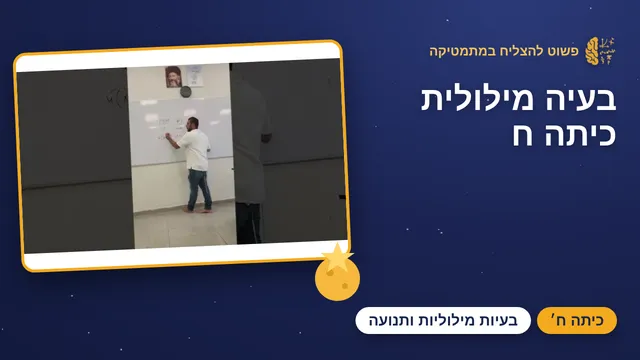
בעיה מילולית כיתה ח בעיה מילולית עם נעלם אחד – הבנת הנקראלהפוך תרגיל מילולי למשוואה עם אחוזים – נעלם אחדבעיה מילולית – הבנת הנקרא · סרטון קצרבעיות מילוליות – הגדרת משתנים · סרטון קצר
בעיה מילולית עם נעלם אחד – הבנת הנקראלהפוך תרגיל מילולי למשוואה עם אחוזים – נעלם אחדבעיה מילולית – הבנת הנקרא · סרטון קצרבעיות מילוליות – הגדרת משתנים · סרטון קצרמערכות משוואות (8) לכל הסרטונים בנושא ←
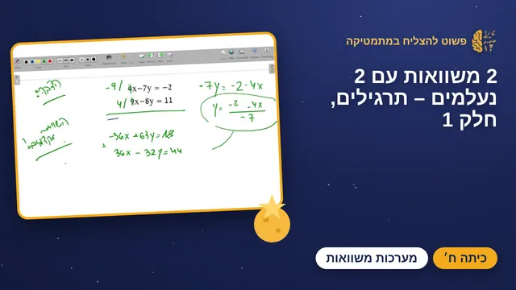
2 משוואות עם 2 נעלמים – תרגילים, חלק 1 2 משוואות עם 2 נעלמים – תרגילים, חלק 2
2 משוואות עם 2 נעלמים – תרגילים, חלק 2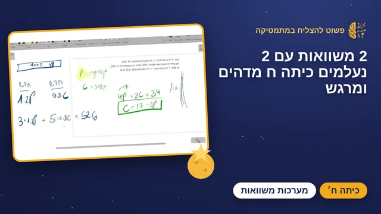
2 משוואות עם 2 נעלמים כיתה ח מדהים ומרגש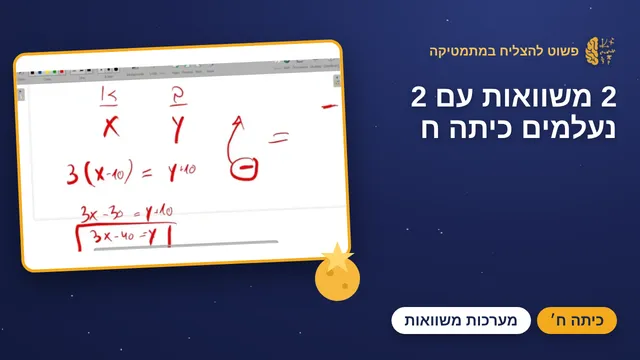
2 משוואות עם 2 נעלמים כיתה ח2 משוואות עם 2 נעלמיםתרגילים לדוגמה – 2 משוואות עם 2 נעלמים 1תרגילים לדוגמה – 2 משוואות עם 2 נעלמים 2 2 משוואות עם 2 נעלמים – שיטת ההצבה
2 משוואות עם 2 נעלמים – שיטת ההצבהאי-שוויונות (2) לכל הסרטונים בנושא ←
קו ישר ושיפוע (41) לכל הסרטונים בנושא ←
 פונקציה קווית – שיפוע אחיד, דוגמאות
פונקציה קווית – שיפוע אחיד, דוגמאות הגדרה של פונקציה כיתה ח – התחלה של ההתחלה
הגדרה של פונקציה כיתה ח – התחלה של ההתחלה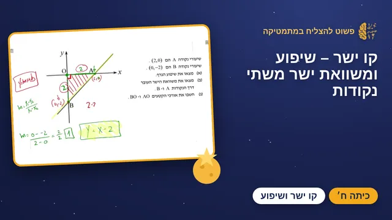
קו ישר – שיפוע ומשוואת ישר משתי נקודות הקו הישר y=6x−5 – שיפוע ונקודת חיתוךהסבר על קו ישר ועל שיפועים כיתה ח האלופים והמטורפים
הקו הישר y=6x−5 – שיפוע ונקודת חיתוךהסבר על קו ישר ועל שיפועים כיתה ח האלופים והמטורפים הסבר מדהים על שיפוע כיתה ח האלופים
הסבר מדהים על שיפוע כיתה ח האלופים קו ישר כולל שיפוע ותרגילים והסברים על מהות השיפוע ועל מהות ה-b כיתה ח 1
קו ישר כולל שיפוע ותרגילים והסברים על מהות השיפוע ועל מהות ה-b כיתה ח 1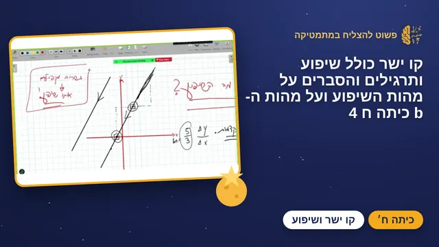
קו ישר כולל שיפוע ותרגילים והסברים על מהות השיפוע ועל מהות ה-b כיתה ח 4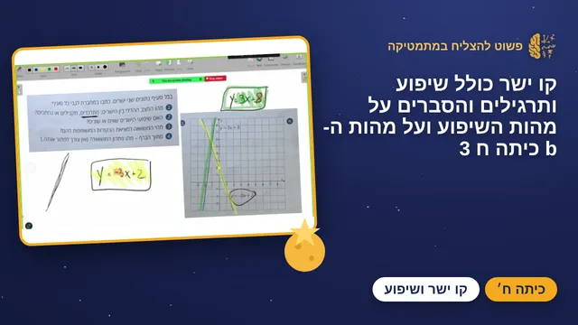
קו ישר כולל שיפוע ותרגילים והסברים על מהות השיפוע ועל מהות ה-b כיתה ח 3 קו ישר כולל שיפוע ותרגילים והסברים על מהות השיפוע ועל מהות ה-b כיתה ח 2
קו ישר כולל שיפוע ותרגילים והסברים על מהות השיפוע ועל מהות ה-b כיתה ח 2 איך מוציאים שיפוע כיתה ח המדהימים
איך מוציאים שיפוע כיתה ח המדהימים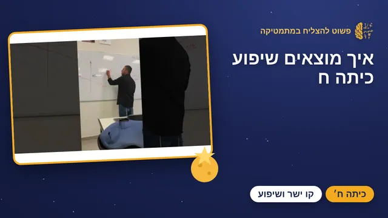
איך מוצאים שיפוע כיתה ח הסבר משוואות ישר כיתה ח 2
הסבר משוואות ישר כיתה ח 2 הסבר משוואות ישר כיתה ח 1
הסבר משוואות ישר כיתה ח 1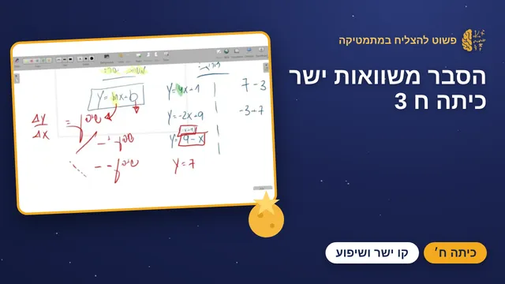
הסבר משוואות ישר כיתה ח 3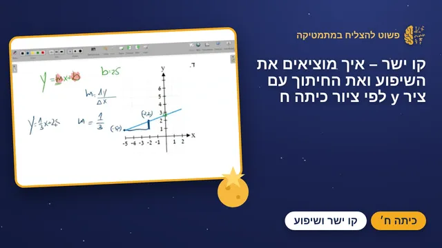
קו ישר – איך מוציאים את השיפוע ואת החיתוך עם ציר y לפי ציור כיתה ח משוואות קו ישר הבנה טובה ונקייה כולל שטח כיתה ח
משוואות קו ישר הבנה טובה ונקייה כולל שטח כיתה ח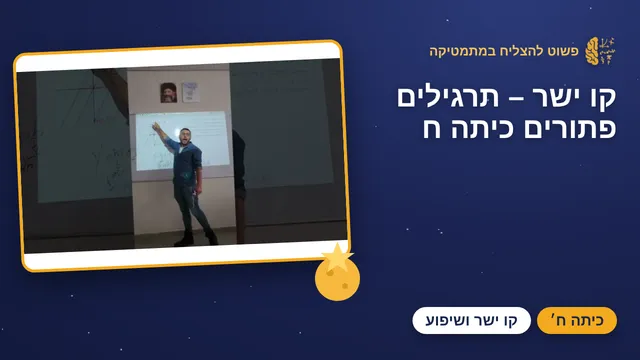
קו ישר – תרגילים פתורים כיתה ח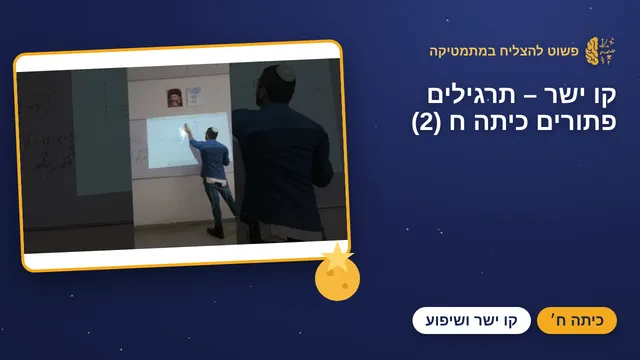
קו ישר – תרגילים פתורים כיתה ח (2)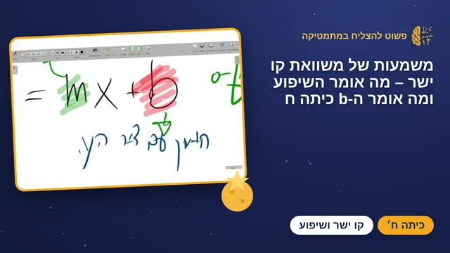
משמעות של משוואת קו ישר – מה אומר השיפוע ומה אומר ה-b כיתה חמשוואת קו ישר – משמעות והסבר נדיר כיתה ח אותו שיפוע – קווים מקבילים כיתה חשיפועים קו ישר – להבדיל ולהבחין כיתה ח
אותו שיפוע – קווים מקבילים כיתה חשיפועים קו ישר – להבדיל ולהבחין כיתה ח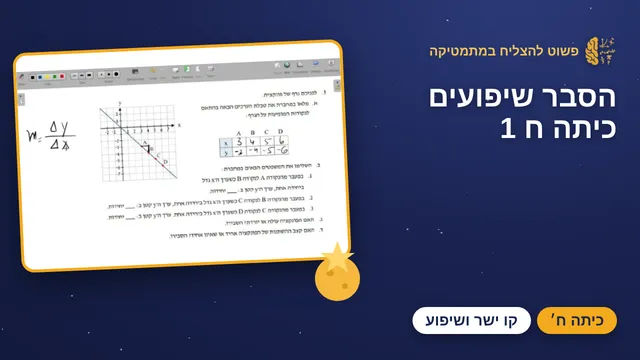
הסבר שיפועים כיתה ח 1 הסבר שיפועים כיתה ח 2גרף פונקציה – הבנה בין x ל-y כיתה ח
הסבר שיפועים כיתה ח 2גרף פונקציה – הבנה בין x ל-y כיתה ח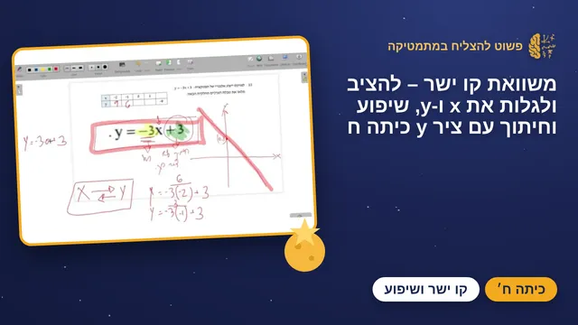
משוואת קו ישר – להציב ולגלות את x ו-y, שיפוע וחיתוך עם ציר y כיתה ח הסבר קשר בין 2 משתנים כיתה ח
הסבר קשר בין 2 משתנים כיתה ח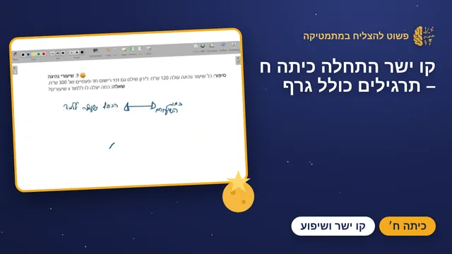
קו ישר התחלה כיתה ח – תרגילים כולל גרף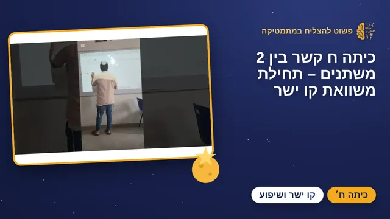
כיתה ח קשר בין 2 משתנים – תחילת משוואת קו ישר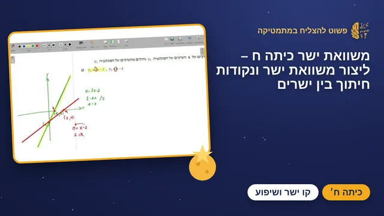
משוואת ישר כיתה ח – ליצור משוואת ישר ונקודות חיתוך בין ישרים משוואת ישר כיתה ח – ליצור משוואת ישר ונקודות חיתוך בין ישרים 1
משוואת ישר כיתה ח – ליצור משוואת ישר ונקודות חיתוך בין ישרים 1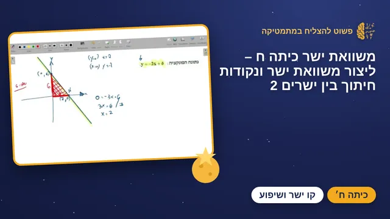
משוואת ישר כיתה ח – ליצור משוואת ישר ונקודות חיתוך בין ישרים 2 משוואת ישר כיתה ח – חיתוכים עם הצירים ושטחים
משוואת ישר כיתה ח – חיתוכים עם הצירים ושטחים משוואת קו ישר עם שיפועים ושטחים כיתה חמשוואת קו ישר כיתה ח עם שטחים ושיפועים
משוואת קו ישר עם שיפועים ושטחים כיתה חמשוואת קו ישר כיתה ח עם שטחים ושיפועים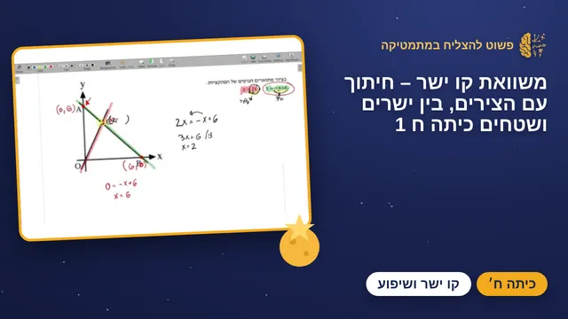
משוואת קו ישר – חיתוך עם הצירים, בין ישרים ושטחים כיתה ח 1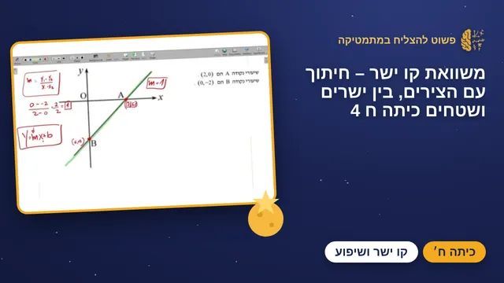
משוואת קו ישר – חיתוך עם הצירים, בין ישרים ושטחים כיתה ח 4 משוואת קו ישר – חיתוך עם הצירים, בין ישרים ושטחים כיתה ח 2
משוואת קו ישר – חיתוך עם הצירים, בין ישרים ושטחים כיתה ח 2 משוואת קו ישר – חיתוך עם הצירים, בין ישרים ושטחים כיתה ח 3
משוואת קו ישר – חיתוך עם הצירים, בין ישרים ושטחים כיתה ח 3 המהות של שיפוע · סרטון קצר
המהות של שיפוע · סרטון קצריחס ופרופורציה (6) לכל הסרטונים בנושא ←
 קנה מידה כיתה ח
קנה מידה כיתה ח יחס כיתה ח 1
יחס כיתה ח 1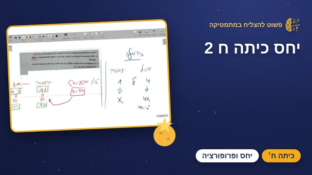
יחס כיתה ח 2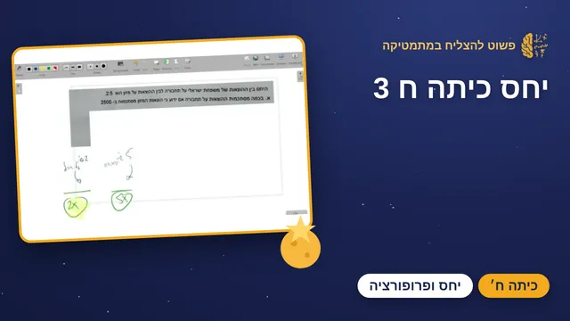
יחס כיתה ח 3 יחס כיתה ח 4
יחס כיתה ח 4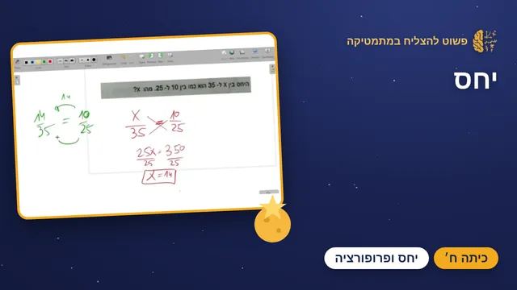
יחסאחוזים (16) לכל הסרטונים בנושא ←
 אחוזים – מחיר לפני הוזלה של 18%הוזלה והתייקרות באחוזים – מחיר סופי ואחוז שינוי כולל
אחוזים – מחיר לפני הוזלה של 18%הוזלה והתייקרות באחוזים – מחיר סופי ואחוז שינוי כולל אחוזים – אנשים באולם, גברים ונשים
אחוזים – אנשים באולם, גברים ונשים אחוזים – משקל תפוז מקולף 20% קליפה
אחוזים – משקל תפוז מקולף 20% קליפה אחוזים – הנחה של 27% על 90 ש״ח
אחוזים – הנחה של 27% על 90 ש״ח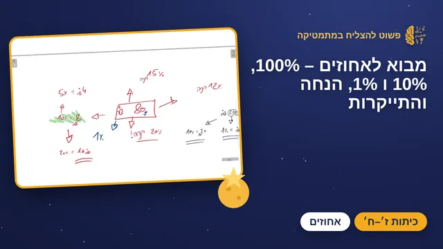
מבוא לאחוזים – 100%, 10% ו 1%, הנחה והתייקרות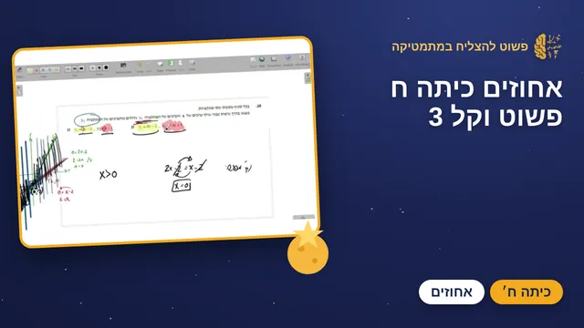
אחוזים כיתה ח פשוט וקל 3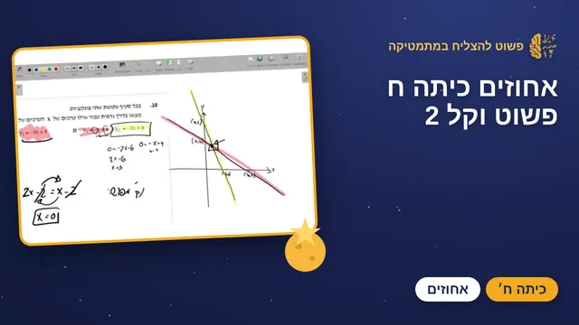
אחוזים כיתה ח פשוט וקל 2 אחוזים כיתה ח פשוט וקל 1בעיות אחוזים מהקל אל הקשה – איך לעבוד נכון עם אחוזים 5
אחוזים כיתה ח פשוט וקל 1בעיות אחוזים מהקל אל הקשה – איך לעבוד נכון עם אחוזים 5 בעיות אחוזים מהקל אל הקשה – איך לעבוד נכון עם אחוזים 4בעיות אחוזים מהקל אל הקשה – איך לעבוד נכון עם אחוזים 3
בעיות אחוזים מהקל אל הקשה – איך לעבוד נכון עם אחוזים 4בעיות אחוזים מהקל אל הקשה – איך לעבוד נכון עם אחוזים 3 בעיות אחוזים מהקל אל הקשה – איך לעבוד נכון עם אחוזים 1בעיות אחוזים מהקל אל הקשה – איך לעבוד נכון עם אחוזים 2מבצעים בחנות – לומדים אחוזים · סרטון קצר
בעיות אחוזים מהקל אל הקשה – איך לעבוד נכון עם אחוזים 1בעיות אחוזים מהקל אל הקשה – איך לעבוד נכון עם אחוזים 2מבצעים בחנות – לומדים אחוזים · סרטון קצר אחוזים · סרטון קצר
אחוזים · סרטון קצרזוויות (6) לכל הסרטונים בנושא ←
 משחקי זוויות – ישרים מקבילים וסכום זוויות במשולש כיתה ח
משחקי זוויות – ישרים מקבילים וסכום זוויות במשולש כיתה ח תרגילים לדוגמה של זוויות 2
תרגילים לדוגמה של זוויות 2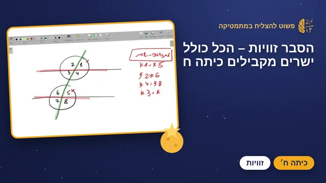
הסבר זוויות – הכל כולל ישרים מקבילים כיתה ח תרגילים לדוגמה של זוויות 1
תרגילים לדוגמה של זוויות 1 הסבר זוויות כיתה ח – קודקודיות, צמודות
הסבר זוויות כיתה ח – קודקודיות, צמודות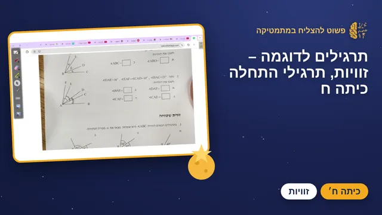
תרגילים לדוגמה – זוויות, תרגילי התחלה כיתה חחפיפת משולשים (12) לכל הסרטונים בנושא ←
 טרנספורמציות וצורות חופפות – צ.ז.צ, ישרים מקבילים וסיבוב
טרנספורמציות וצורות חופפות – צ.ז.צ, ישרים מקבילים וסיבוב ריבוע ABCD – הוכחה ש EC מאונך ל DF חפיפה
ריבוע ABCD – הוכחה ש EC מאונך ל DF חפיפה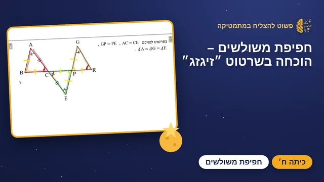
חפיפת משולשים – הוכחה בשרטוט ״זיגזג״חפיפת משולשים כיתה ח תרגילים מדהימים ורעיונות יפים 3 חפיפת משולשים כיתה ח תרגילים מדהימים ורעיונות יפים 5
חפיפת משולשים כיתה ח תרגילים מדהימים ורעיונות יפים 5 חפיפת משולשים כיתה ח תרגילים מדהימים ורעיונות יפים 4חפיפת משולשים כיתה ח תרגילים מדהימים ורעיונות יפים 2
חפיפת משולשים כיתה ח תרגילים מדהימים ורעיונות יפים 4חפיפת משולשים כיתה ח תרגילים מדהימים ורעיונות יפים 2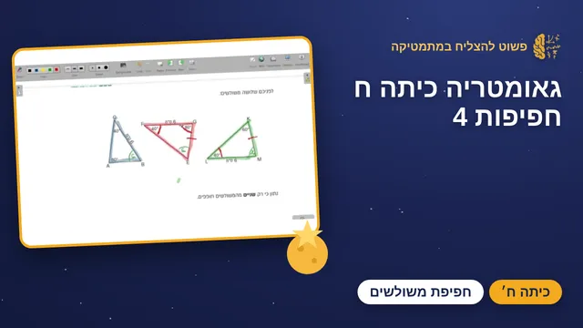
גאומטריה כיתה ח חפיפות 4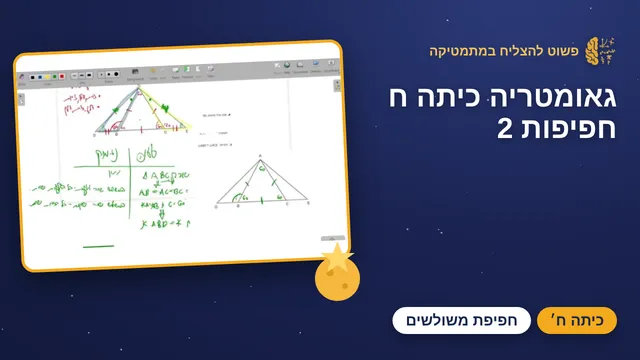
גאומטריה כיתה ח חפיפות 2גאומטריה כיתה ח חפיפות 3 גאומטריה כיתה ח חפיפות 1
גאומטריה כיתה ח חפיפות 1 גאומטריה כיתה ח חפיפות 5
גאומטריה כיתה ח חפיפות 5משולש ישר-זווית ופיתגורס (6) לכל הסרטונים בנושא ←
 משפט פיתגורס במלבן – חישוב BE ואלכסון AC
משפט פיתגורס במלבן – חישוב BE ואלכסון AC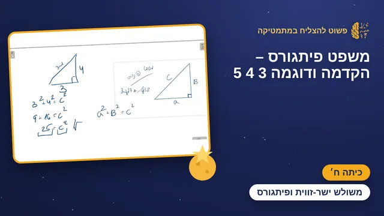
משפט פיתגורס – הקדמה ודוגמה 3 4 5 משפט פיתגורס – חישוב ניצב 10, 28
משפט פיתגורס – חישוב ניצב 10, 28 משפט פיתגורס – חישוב יתר 10, 24
משפט פיתגורס – חישוב יתר 10, 24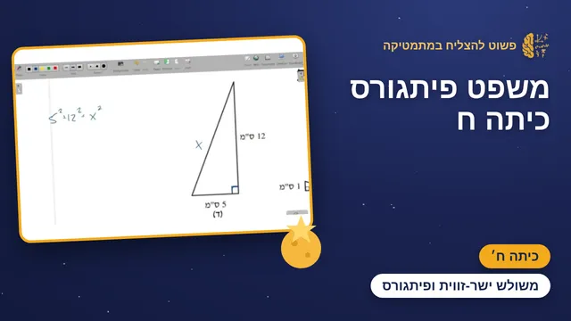
משפט פיתגורס כיתה ח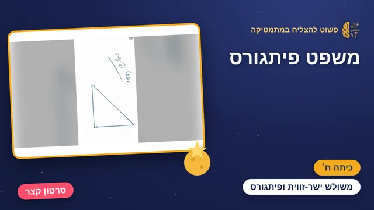
משפט פיתגורס · סרטון קצר